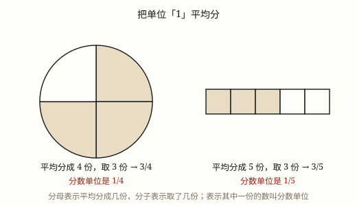
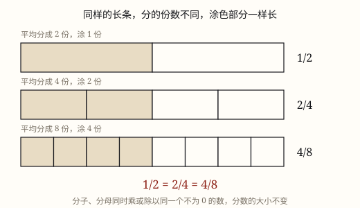

分数的意义与基本性质
把单位「1」平均分成若干份，表示一份或几份的数就是分数；分数单位是其中的一份，分数和除法是一回事。
| 所属主题 | 数的意义和性质 |
|---|---|
| 所属模块 | 数与代数 |
| 课标学段 | 第三学段（5~6年级） |
| 前置知识 | 除法的初步认识与用口诀求商 |
| 核心素养 | 数感符号意识推理意识 |
教材定位
人民教育出版社《2024年版》
对应五下第 2 单元「分数的认识」：分数的意义、分数与分数单位、真分数与假分数、分数的基本性质。；对应五下第 2 单元「分数的认识」：分数的基本性质、约分与通分。
课标要求
| 数与代数·数与运算 | 结合具体情境探索并理解小数和分数的意义，感悟计数单位；会进行小数、分数的转化，进一步发展数感和符号意识。 印刷第 23 页 行为动词：理解 |
|---|---|
| 数与代数·数与运算 | 结合具体情境理解整数除法与分数的关系（例16）。 印刷第 23 页 行为动词：理解 |
说明
把单位「1」平均分成若干份，表示这样的一份或几份的数，就叫做分数。平均分成 4 份、取其中 3 份，就是 3/4：分母 4 是分成的份数，分子 3 是取的份数，分数线就是「平均分」这件事本身。
单位「1」不只是「一个东西」。它可以是一个饼、一张纸，也可以是一盒 12 块糖、全班 40 人、一条 5 米长的彩带——只要把它看成一个整体，它就是单位「1」。
把单位「1」平均分成若干份，表示其中一份的数，叫分数单位。3/4 的分数单位是 1/4，5/8 的分数单位是 1/8。分母是几，分数单位就是几分之一。
分数和除法说的是同一件事：a ÷ b = a/b（b 不为 0）。3 米平均分给 4 个人，每人 3 ÷ 4 = 3/4 米。被除数当分子，除数当分母，除号变成分数线。
（分数的基本性质）
分数的基本性质：分子和分母同时乘或除以相同的数（0 除外），分数大小不变。3/4 = 3 × 2/4 × 2 = 6/8。
为什么不变？分母乘 2，每份被切成 2 小份；分子乘 2，取的份数也翻倍。份数和每份大小同时变，结果没变。
这条性质有两个用处。约分：分子分母同除以公因数，化到最简，24/40 = 3/5。
通分：分子分母同时乘同一个数，把分母化成相同的数，3/4 = 9/12，2/3 = 8/12。约分变简单，通分能比大小，一除一乘用的是同一条性质。
使用场景
分东西：一张披萨 8 等分，吃了 3 块就是 3/8；一盒 12 块巧克力，拿走 1/3 是 4 块。
测量与分装：5 升果汁平均装进 8 个瓶子，每瓶 5/8 升；一根 7 米长的绳子平均剪成 9 段，每段 7/9 米。
表示部分与整体：全班 40 人里女生有 19 人，女生占全班的 19/40。
看数据：体检表上的「近视人数占 1/5」、作业单上的「已完成 3/4」，都是分数在说话。
（分数的基本性质）
改配方：食谱 A 写糖 3/4 杯，食谱 B 写 6/8 杯，写法不同，甜度一样。
算占比：全班 40 人里 24 人参加社团，24/40 约成 3/5，就是「五个人里三个」。
比大小：3/4 与 5/6 通分成 9/12 与 10/12，大小立见。
看图施工：图纸标注 12/16，写成 3/4 更省事。
注意点
必须平均分。随便掰成两块，不能说每块是 1/2；只有两块一样大，才能这么说。
分数单位只看分母，不看分子。3/4 的分数单位是 1/4，不是 3/4，也不是 1/3。
「占几分之几」和「几米」不是一回事。把 5 米长的绳子平均分成 8 段，每段是全长的 1/8，每段长 5/8 米。前者不带单位，后者带单位。
分母不能是 0。分母是平均分的份数，分成 0 份根本没法分；从除法那头看，0 也不能作除数。
（分数的基本性质）
必须同时乘、同时除，只动一边分数值就变。
乘或除的必须是同一个数：分子乘 2、分母乘 3 就不对了。
只能乘除，不能加减：1/2 的分子分母都加 1 得 2/3，两者并不相等。
约分要约到最简：18/24 化成 9/12 还没完，分子分母还有公因数 3。

图 1：分母管「分几份」，分子管「取几份」

图 1：分得越细，份数越多，涂到的长度始终一样
为什么是这样
算理推导
先看「平均分」。把一张纸对折再对折，得到 4 块一样大的纸，每块就是这张纸的 1/4。块必须一样大，这就是「平均」的意思——不平均，就没法用同一个数说清每块有多大。
为什么单位「1」可以是一堆东西？把 12 块糖看成一整盒，平均分成 3 份，每份 4 块。这时每份是这盒糖的 1/3，虽然手里拿着 4 块。分数说的是「占整体的几份」，不是「几个」。
同一个 1/3，整体变了大小就变：12 块糖的 1/3 是 4 块，9 块糖的 1/3 是 3 块。所以说分数之前，一定要先说清「谁的单位 1」。
为什么 3 ÷ 4 = 3/4？3 米平均分给 4 人：把每 1 米都分成 4 段，每段 1/4 米，3 米一共 12 段；4 个人平分这 12 段，每人 3 段，就是 3 个 1/4 米，也就是 3/4 米。
换个顺序算也一样：先算 1 ÷ 4 = 1/4 米，再乘 3 得 3/4 米。两条路走到同一个答案，所以「被除数作分子、除数作分母」不是硬性规定，是分出来的结果。
（分数的基本性质）
画一个长方形，平均分成 4 份，涂其中 3 份，涂色部分是 3/4。不改涂色范围，只在里面加线：每份从中间竖着切开，变成 2 小份。
长方形成了 8 小份，原来涂的 3 份各裂成 2 小份，共 6 小份——4 × 2 = 8，3 × 2 = 6。涂色面积没变，写法从 3/4 变成 6/8。
反过来把每 2 小份合并成 1 份，8 份合回 4 份，6 小份合成 3 份，又回到 3/4。加线是乘，合并是除，涂色面积始终没动。
为什么 0 要除外？分子分母都乘 0，得到 0/0，分母成了 0，而 0 不能作除数，这个分数没有意义。
动手实验
拿一张长方形纸，先折出 1/2，再折出 1/4、1/8，把每一份涂色比较大小。再拿 12 颗棋子，分别取出它的 1/2、1/3、1/4，数一数各是几颗——同样是「取一份」，颗数却不一样。 （分数的基本性质） 三张一样大的长方形纸：一张分 4 份涂 3 份，一张分 8 份涂 6 份，一张分 12 份涂 9 份。对着窗玻璃叠起来看，涂色部分完全重合；再把一张平均分 3 份涂 2 份，比比还重合不重合。
按场景的例题
例 1（场景：购物消费） 一张披萨平均切成 8 块，小满吃了 3 块
他吃了这张披萨的几分之几？这个分数的分数单位是多少？
解：平均分成 8 份、取其中 3 份，就是 3/8；分数单位是 1/8，3/8 里面有 3 个 1/8。
答：3/8，分数单位是 1/8。
例 2（场景：上学日常） 手工课上一根 5 米长的彩带，要平均分给 8 个小组
每个小组分到多少米？
解：5 ÷ 8 = 5/8（米）。也可以想：1 米分成 8 份，每份 1/8 米，5 米就是 5 个 1/8 米。
答：每组分到 5/8 米。
例 3（场景：计量与估算） 4 升果汁平均装进 5 个同样的瓶子
每瓶装多少升？每瓶是总量的几分之几？
解：每瓶 4 ÷ 5 = 4/5 升。总量是 5 瓶，每瓶占总量的 1/5。
答：每瓶 4/5 升，是总量的 1/5。
例 4（场景：家庭与年龄） 桌上有一盒 12 颗糖，弟弟想拿 1/3，姐姐想拿 1/4
两人各能拿几颗？谁拿得多？
解：12 ÷ 3 = 4（颗），12 ÷ 4 = 3（颗）。平均分的份数越少，每一份越大，所以 1/3 > 1/4。
答：1/3 是 4 颗，1/4 是 3 颗，弟弟拿得多。
例 5（场景：饮食与配比） 两本食谱上的糖量写法不同
食谱 A 写「糖 3/4 杯」，食谱 B 写「糖 6/8 杯」，其他材料完全相同。两份点心一样甜吗？
解：3/4 = 3 × 2/4 × 2 = 6/8，分子分母同时乘 2，分数大小不变。
答：一样甜，两个分数相等。
例 6（场景：校园生活） 社团报名表
六年级 40 人中有 24 人参加社团。用最简分数表示参加人数占全班的几分之几。
解：24/40 的分子分母同时除以 8：24 ÷ 8/40 ÷ 8 = 3/5。
答：占全班的 3/5。
例 7（场景：绿化照明） 花坛分格种花
花坛分成 18 格，种了 12 格月季。用最简分数表示；若改画成 6 格，要涂几格才表示同样的面积？
解：12/18 = 12 ÷ 6/18 ÷ 6 = 2/3；2/3 = 4/6，涂 4 格。
答：2/3；改画 6 格时涂 4 格。
常用推论
除法与分数的关系：a ÷ b = a/b（b 不为 0），被除数作分子，除数作分母。
分母是几，分数单位就是几分之一；分子是几，就有几个这样的分数单位。
分母越大，分数单位越小：1/8 < 1/4 < 1/2。
同一个分数，单位「1」不同，表示的实际大小也不同。
分数的基本性质：a/b = a × m/b × m = a ÷ m/b ÷ m（b、m 都不为 0）。
约分：分子分母同除以最大公因数，一次化到最简。
通分：分子分母同时乘相同的数，把异分母分数化成同分母分数，才能比大小、相加减。
易错点
错把一张纸随手撕成两块，说「每块是这张纸的 1/2」。
为什么错两块不一样大，就不是平均分；分数只能描述平均分的结果。
正确先对折，让两块完全重合再撕，才能说每块是这张纸的 1/2。
错「3/4 的分数单位是 3/4」，或者「是 1/3」。
为什么错分数单位是「平均分成若干份后的一份」，只由分母决定；分子只表示有几个这样的单位。
正确3/4 的分数单位是 1/4，它有 3 个 1/4。
错「把 5 米长的绳子平均分成 8 段，每段是全长的 5/8。」
为什么错把「占全长的几分之几」和「具体几米」混在一起了。全长是单位 1，分成 8 段，每段占全长的 1/8。
正确每段占全长的 1/8；每段长 5/8 米。
错「4/0 表示把 4 平均分成 0 份。」
为什么错分成 0 份这件事做不到，除数不能是 0，分母也不能是 0。
正确分母必须是不为 0 的自然数，4/0 没有意义。
错「3/4 的分子乘 2 得 6，分母不变，所以 3/4 = 6/4。」
为什么错只动分子。取的份数翻倍而每份没变大，分数值就翻倍了。
正确3/4 = 6/8：分子分母同时乘 2，数值不变。
错「1/2 的分子分母都加 1，得 2/3，所以 1/2 = 2/3。」
为什么错性质里只有乘和除。加同一个数等于各挪一格，比值就变了。
正确1/2 = 2/4 = 3/6，与 2/3 都不相等。
错「5/8 的分子分母都乘 0，得 0/0，还等于 5/8。」
为什么错分母乘 0 变成 0，0 不能作除数，0/0 没有意义。
正确乘或除的数必须不为 0，如 5/8 = 10/16。
直观理解
分数像一份「切蛋糕说明书」：分母告诉你切成几块，分子告诉你手里拿了几块。同一张蛋糕，切成 8 块时的一块，比切成 4 块时的一块小——所以分母越大，一份反而越小。 （分数的基本性质） 分数像一块切好的蛋糕。你把每一块再从中间切开，块数变多，可蛋糕一点没变大——分母变大、分子跟着变大，说的还是那几口。反过来把小块合并，块数变少，蛋糕还是那块。只要不动刀口的位置，怎么写都是同一块。
平均分，是根底；分母分几份，分子取几份；分数线，就是除号。 （分数的基本性质） 分子分母同乘除，步调一致才作数；你切细来我也切，蛋糕还是那块糕。只动一个要出错，同加同减更不行；零要除外记心上，约分通分都靠它。